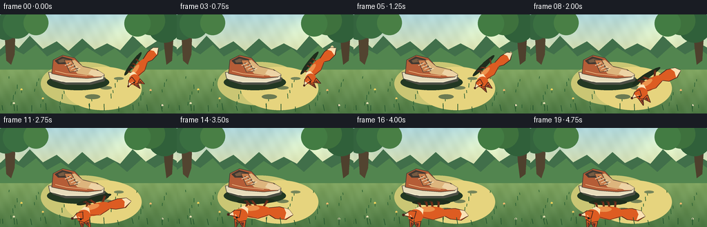
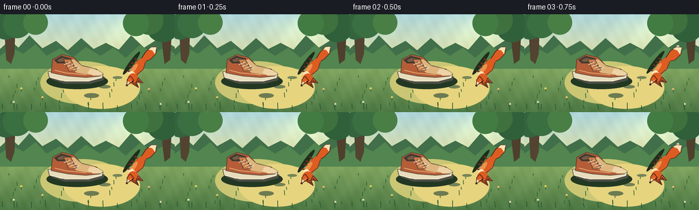
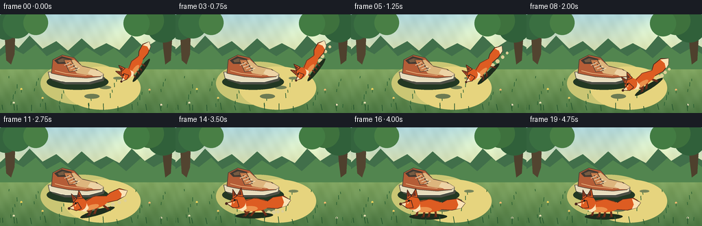
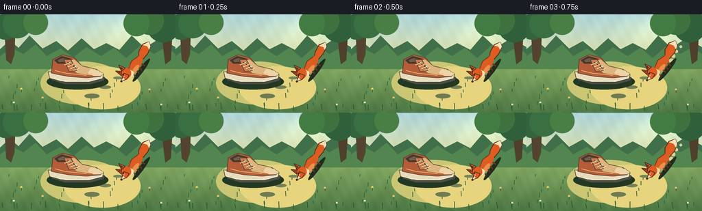
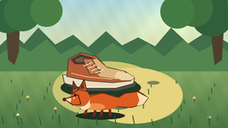

CODING AGENTS AS PIXEL WORLD MODELS
traex/GPT-5.6-Sol · dynamic_spatial_relationship_0030
点击播放 · 原生 RGB 像素
逐轮保存的候选
回放视频、检查图与代码变化。
每份候选均可单独播放。实际图片检查记录在下方工具轨迹中。
候选 01播放与检查图
点击播放 · 原生 RGB 像素


展开代码变化
--- 上一保存版本
+++ 本次保存版本
@@ -0,0 +1,234 @@
+from pathlib import Path
+import math
+import numpy as np
+from PIL import Image, ImageDraw, ImageFilter
+import artifact_io
+
+W, H, N = 256, 144, 20
+SS = 4
+
+
+def sc(v):
+ return int(round(v * SS))
+
+def pts(seq):
+ return [(sc(x), sc(y)) for x, y in seq]
+
+def bezier(p0, p1, p2, p3, t):
+ u = 1.0 - t
+ return (u**3*np.array(p0) + 3*u*u*t*np.array(p1) +
+ 3*u*t*t*np.array(p2) + t**3*np.array(p3))
+
+def bezier_tangent(p0, p1, p2, p3, t):
+ u = 1.0 - t
+ return (3*u*u*(np.array(p1)-np.array(p0)) +
+ 6*u*t*(np.array(p2)-np.array(p1)) +
+ 3*t*t*(np.array(p3)-np.array(p2)))
+
+def ease(t):
+ return t*t*(3-2*t)
+
+class Canvas:
+ def __init__(self, im):
+ self.im = im
+ self.d = ImageDraw.Draw(im, 'RGBA')
+ def ellipse(self, box, fill, outline=None, width=1):
+ self.d.ellipse(tuple(sc(v) for v in box), fill=fill, outline=outline, width=sc(width))
+ def polygon(self, p, fill, outline=None):
+ self.d.polygon(pts(p), fill=fill)
+ if outline:
+ self.d.line(pts(p+[p[0]]), fill=outline, width=sc(1), joint='curve')
+ def line(self, p, fill, width=1, joint='curve'):
+ self.d.line(pts(p), fill=fill, width=sc(width), joint=joint)
+ def rounded(self, box, radius, fill, outline=None, width=1):
+ self.d.rounded_rectangle(tuple(sc(v) for v in box), radius=sc(radius), fill=fill,
+ outline=outline, width=sc(width))
+
+
+def make_background(frame):
+ h, w = H*SS, W*SS
+ yy, xx = np.mgrid[0:h, 0:w]
+ y = yy/(h-1)
+ # Golden forest clearing: distant sky, foliage, then grass.
+ top = np.array([173, 213, 218.], dtype=float)
+ horizon = np.array([226, 226, 167.], dtype=float)
+ grass = np.array([111, 153, 84.], dtype=float)
+ arr = np.zeros((h,w,3), dtype=float)
+ mask = y < .47
+ q = np.minimum(y/.47, 1)[...,None]
+ arr[:] = grass
+ arr[mask] = (top*(1-q[mask]) + horizon*q[mask])
+ q2 = np.maximum((y-.47)/.53, 0)[...,None]
+ arr[~mask] = (np.array([139,174,102.])*(1-q2[~mask]) + np.array([77,120,68.])*q2[~mask])
+ # subtle sun glow and organic texture
+ glow = np.exp(-(((xx/w)-.76)**2 + ((yy/h)-.16)**2)/.035)[...,None]
+ arr += glow*np.array([30.,25.,8.])
+ texture = (3.0*np.sin(xx/23.0 + yy/31.0) + 2.0*np.sin(xx/9.7-yy/19.0))[...,None]
+ arr += texture
+ return Image.fromarray(np.uint8(np.clip(arr,0,255)), 'RGB').convert('RGBA')
+
+
+def draw_scenery(c, frame):
+ # Distant woods silhouettes and trunks.
+ sway = math.sin(frame*.28)
+ c.polygon([(0,51),(14,38),(27,49),(43,31),(62,50),(82,39),(99,53),(119,35),(137,51),(155,42),(174,52),(192,31),(211,49),(233,35),(256,48),(256,74),(0,74)], (65,111,74,255))
+ c.polygon([(0,61),(17,49),(34,58),(52,44),(68,61),(88,50),(107,63),(126,48),(147,61),(166,49),(184,64),(205,45),(224,58),(242,48),(256,58),(256,80),(0,80)], (82,133,79,255))
+ # tree trunks on sides frame the scene
+ c.polygon([(5,0),(23,0),(21,58),(16,73),(9,67)], (82,68,48,255))
+ c.polygon([(235,0),(253,0),(249,67),(241,73),(238,49)], (78,64,45,255))
+ for x,y,r,col in [(8,18,19,(52,100,62,255)),(25,14,21,(58,111,65,255)),(238,17,24,(48,96,58,255)),(218,9,21,(62,113,61,255)),(52,12,18,(73,127,69,255)),(199,13,19,(67,124,67,255))]:
+ c.ellipse((x-r,y-r,x+r,y+r), col)
+ # warm patches of sunlight
+ c.ellipse((59,69,181,132), (202,198,116,33))
+ c.ellipse((93,76,205,139), (230,212,126,27))
+ # foreground blades and flowers
+ for i in range(29):
+ x = (i*37+13)%256
+ y = 93 + ((i*19)%47)
+ hh = 3 + (i%5)
+ dx = math.sin(frame*.25+i)*.45
+ c.line([(x,y),(x+dx,y-hh)], (45,99,54,175), 1)
+ for x,y,col in [(31,109,(245,213,91,255)),(218,110,(246,185,111,255)),(20,129,(232,224,181,255)),(235,132,(235,219,183,255)),(62,122,(239,203,100,255))]:
+ c.ellipse((x-1.4,y-1.4,x+1.4,y+1.4), col)
+ c.line([(x,y+1),(x,y+5)], (55,102,53,210), 1)
+
+
+def draw_shoe(c):
+ # Cast shadow and distinct cream sneaker in three-quarter side profile.
+ c.ellipse((68,87,158,110), (35,56,35,82))
+ # outsole
+ c.polygon([(72,88),(76,96),(94,102),(132,102),(151,97),(153,92),(145,89),(107,89)], (77,79,69,255))
+ c.polygon([(70,84),(72,93),(89,98),(130,98),(150,93),(151,88),(137,85),(102,86)], (231,220,188,255), (86,83,68,255))
+ # upper, heel on left, toe on right
+ c.polygon([(75,86),(77,66),(91,59),(108,63),(119,75),(140,80),(151,87),(146,91),(126,93),(100,91),(84,88)], (181,93,55,255), (75,65,53,255))
+ # ankle opening
+ c.polygon([(79,67),(90,61),(105,65),(97,72),(84,72)], (65,57,49,255))
+ c.polygon([(84,67),(91,64),(101,66),(96,69),(86,70)], (119,91,66,255))
+ # cream side panel and toe cap
+ c.polygon([(98,69),(108,66),(120,76),(139,80),(146,87),(131,89),(112,86)], (221,181,125,255))
+ c.polygon([(132,80),(143,82),(151,87),(147,90),(136,90),(128,86)], (237,211,165,255))
+ # tongue
+ c.polygon([(93,66),(103,66),(112,82),(101,84)], (200,125,76,255), (89,67,52,255))
+ # eyelets and laces
+ for i in range(4):
+ x=99+i*4.4; y=71+i*2.7
+ c.ellipse((x-1,y-1,x+1,y+1), (76,67,58,255))
+ c.line([(x-5,y+3),(x+4,y-1)], (244,231,197,255), 1)
+ c.line([(74,93),(95,98),(130,98),(149,93)], (255,247,218,220), 1)
+ # stitching
+ c.line([(80,82),(96,86),(126,89)], (245,199,143,180), 1)
+
+
+def tf_factory(cx, cy, angle, scale):
+ co, si = math.cos(angle), math.sin(angle)
+ def tf(p):
+ x,y=p
+ return (cx + scale*(x*co-y*si), cy + scale*(x*si+y*co))
+ return tf
+
+
+def poly_local(c, tf, p, fill, outline=None):
+ c.polygon([tf(q) for q in p], fill, outline)
+
+def ellipse_local(c, tf, box, fill):
+ # ellipse as a smoothly transformed polygon, preserving rotation
+ x0,y0,x1,y1=box
+ p=[]
+ for i in range(36):
+ a=2*math.pi*i/36
+ p.append(tf(((x0+x1)/2+(x1-x0)/2*math.cos(a),(y0+y1)/2+(y1-y0)/2*math.sin(a))))
+ c.polygon(p, fill)
+
+
+def draw_fox(c, cx, cy, angle, scale, phase, moving):
+ tf=tf_factory(cx,cy,angle,scale)
+ # Ground shadow follows the fox.
+ ellipse_local(c, tf, (-29,7,28,16), (30,45,28,70))
+ orange=(221,92,34,255); dark=(111,48,27,255); deep=(74,39,29,255); cream=(251,226,181,255)
+ # bushy tail, raised while running
+ wag=2.2*math.sin(phase*.62)
+ tail=[(-18,-8),(-29,-15+wag),(-45,-17+wag),(-56,-10+wag),(-50,-2+wag*.5),(-36,2),(-20,1)]
+ poly_local(c,tf,tail,orange,deep)
+ # white tail tip
+ tip=[(-43,-16+wag),(-56,-10+wag),(-50,-2+wag*.5),(-43,0),(-46,-7+wag*.7)]
+ poly_local(c,tf,tip,cream)
+ # legs, visibly cycling during run
+ if moving:
+ a=math.sin(phase); b=math.sin(phase+math.pi)
+ else:
+ a=b=0
+ legs=[(-11,1,-12+7*a,12),(5,2,7+7*b,12),(-3,2,-1+6*b,12),(15,0,17+6*a,10)]
+ for x0,y0,x1,y1 in legs:
+ c.line([tf((x0,y0)),tf((x1,y1))], dark, max(2,round(3*scale)))
+ c.line([tf((x1,y1)),tf((x1+3,y1))], deep, max(1,round(2*scale)))
+ # body
+ ellipse_local(c,tf,(-24,-14,22,5),orange)
+ # dark back contour and cream belly/chest
+ c.line([tf((-19,-10)),tf((-3,-15)),tf((15,-10))], (117,50,28,150), max(1,round(scale)))
+ ellipse_local(c,tf,(-6,-3,18,5),(236,145,76,210))
+ poly_local(c,tf,[(12,-8),(21,-7),(25,1),(17,5),(11,1)],cream)
+ # neck/head and pointed muzzle
+ ellipse_local(c,tf,(12,-20,34,1),orange)
+ poly_local(c,tf,[(25,-13),(41,-8),(31,-1),(22,-2)],orange,deep)
+ poly_local(c,tf,[(33,-9),(41,-8),(34,-4)],cream)
+ ellipse_local(c,tf,(39,-9.5,43,-5.5),deep)
+ # two large fox ears
+ poly_local(c,tf,[(15,-17),(18,-31),(25,-19)],orange,deep)
+ poly_local(c,tf,[(25,-19),(31,-29),(32,-14)],orange,deep)
+ poly_local(c,tf,[(18,-20),(19,-27),(23,-20)],(100,49,38,255))
+ poly_local(c,tf,[(27,-20),(30,-26),(30,-18)],(100,49,38,255))
+ # face
+ ellipse_local(c,tf,(27,-14,30,-11),(34,29,24,255))
+ c.line([tf((29,-10)),tf((31,-8))], (252,222,172,230), 1)
+
+
+def draw_dust(c, x, y, angle, progress, frame):
+ # small translucent puffs trail behind the running fox
+ if progress <= 0 or progress >= 1: return
+ co,si=math.cos(angle),math.sin(angle)
+ for j in range(4):
+ dist=20+j*8
+ px=x-dist*co + math.sin(frame+j)*2
+ py=y-dist*si+6-j*.5
+ r=3.3-j*.45
+ c.ellipse((px-r,py-r,px+r,py+r),(222,207,151,max(20,100-j*19)))
+
+
+def render(frame):
+ im=make_background(frame)
+ c=Canvas(im)
+ draw_scenery(c,frame)
+ # A few flat stepping stones emphasize depth toward foreground.
+ c.ellipse((165,91,179,95),(118,133,90,100))
+ c.ellipse((145,104,162,109),(115,129,86,90))
+ c.ellipse((123,116,145,123),(109,123,82,80))
+ draw_shoe(c)
+
+ # Hold the readable starting relation, then run on a curved path to foreground.
+ raw=(frame-2)/13.0
+ t=max(0.0,min(1.0,raw))
+ te=ease(t)
+ p0=(199,77); p1=(191,88); p2=(152,119); p3=(112,119)
+ pos=bezier(p0,p1,p2,p3,te)
+ tan=bezier_tangent(p0,p1,p2,p3,max(.001,min(.999,te)))
+ angle=math.atan2(tan[1],tan[0])
+ moving=0<t<1
+ # perspective growth makes final fox unambiguously in front of the shoe.
+ size=.73 + .24*te
+ # lively vertical stride bounce only while in transit
+ bounce=(-1.6*abs(math.sin(t*math.pi*6))) if moving else (math.sin(frame*.6)*.35 if frame<3 else 0)
+ draw_dust(c,pos[0],pos[1],angle,t,frame)
+ draw_fox(c,pos[0],pos[1]+bounce,angle,size,frame*2.15,moving)
+ # foreground fringe for depth
+ for i in range(14):
+ x=(i*21+4)%256; y=139+(i%3)
+ c.line([(x,y),(x-1+math.sin(frame*.2+i),y-7-(i%4))],(39,87,48,220),1)
+ return np.asarray(im.convert('RGB').resize((W,H),Image.Resampling.LANCZOS),dtype=np.uint8)
+
+
+def main():
+ frames=np.stack([render(i) for i in range(N)],axis=0)
+ artifact_io.save(frames,Path(__file__).resolve().parent)
+
+if __name__=='__main__':
+ main()
候选 02播放与检查图
点击播放 · 原生 RGB 像素


展开代码变化
--- 上一保存版本
+++ 本次保存版本
@@ -123,7 +123,10 @@
co, si = math.cos(angle), math.sin(angle)
def tf(p):
x,y=p
- return (cx + scale*(x*co-y*si), cy + scale*(x*si+y*co))
+ # The fox artwork faces right. Its route heads left, so use a
+ # reflected (rather than 180-degree rotated) local frame: the nose
+ # follows the path while paws remain below and ears remain above.
+ return (cx + scale*(x*co+y*si), cy + scale*(x*si-y*co))
return tf
可观测工具轨迹
实际执行的命令与返回图片。
命令 1exit 0
/bin/bash -lc "cat prompt.txt && printf '\\n---RULES---\\n' && cat GENERATION_RULES.md && printf '\\n---SPEC---\\n' && cat task_spec.json"
命令 2exit 0
/bin/bash -lc "find . -maxdepth 2 -type f -printf '%p %s bytes\\n' | sort"
命令 3exit 0
/bin/bash -lc "sed -n '1,240p' artifact_io.py"
命令 4exit 0
/bin/bash -lc "cat > generate.py <<'PY'
from pathlib import Path
import math
import numpy as np
from PIL import Image, ImageDraw, ImageFilter
import artifact_io
W, H, N = 256, 144, 20
SS = 4
def sc(v):
return int(round(v * SS))
def pts(seq):
return [(sc(x), sc(y)) for x, y in seq]
def bezier(p0, p1, p2, p3, t):
u = 1.0 - t
return (u**3*np.array(p0) + 3*u*u*t*np.array(p1) +
3*u*t*t*np.array(p2) + t**3*np.array(p3))
def bezier_tangent(p0, p1, p2, p3, t):
u = 1.0 - t
return (3*u*u*(np.array(p1)-np.array(p0)) +
6*u*t*(np.array(p2)-np.array(p1)) +
3*t*t*(np.array(p3)-np.array(p2)))
def ease(t):
return t*t*(3-2*t)
class Canvas:
def __init__(self, im):
self.im = im
self.d = ImageDraw.Draw(im, 'RGBA')
def ellipse(self, box, fill, outline=None, width=1):
self.d.ellipse(tuple(sc(v) for v in box), fill=fill, outline=outline, width=sc(width))
def polygon(self, p, fill, outline=None):
self.d.polygon(pts(p), fill=fill)
if outline:
self.d.line(pts(p+[p[0]]), fill=outline, width=sc(1), joint='curve')
def line(self, p, fill, width=1, joint='curve'):
self.d.line(pts(p), fill=fill, width=sc(width), joint=joint)
def rounded(self, box, radius, fill, outline=None, width=1):
self.d.rounded_rectangle(tuple(sc(v) for v in box), radius=sc(radius), fill=fill,
outline=outline, width=sc(width))
def make_background(frame):
h, w = H*SS, W*SS
yy, xx = np.mgrid[0:h, 0:w]
y = yy/(h-1)
# Golden forest clearing: distant sky, foliage, then grass.
top = np.array([173, 213, 218.], dtype=float)
horizon = np.array([226, 226, 167.], dtype=float)
grass = np.array([111, 153, 84.], dtype=float)
arr = np.zeros((h,w,3), dtype=float)
mask = y < .47
q = np.minimum(y/.47, 1)[...,None]
arr[:] = grass
arr[mask] = (top*(1-q[mask]) + horizon*q[mask])
q2 = np.maximum((y-.47)/.53, 0)[...,None]
arr[~mask] = (np.array([139,174,102.])*(1-q2[~mask]) + np.array([77,120,68.])*q2[~mask])
# subtle sun glow and organic texture
glow = np.exp(-(((xx/w)-.76)**2 + ((yy/h)-.16)**2)/.035)[...,None]
arr += glow*np.array([30.,25.,8.])
texture = (3.0*np.sin(xx/23.0 + yy/31.0) + 2.0*np.sin(xx/9.7-yy/19.0))[...,None]
arr += texture
return Image.fromarray(np.uint8(np.clip(arr,0,255)), 'RGB').convert('RGBA')
def draw_scenery(c, frame):
# Distant woods silhouettes and trunks.
sway = math.sin(frame*.28)
c.polygon([(0,51),(14,38),(27,49),(43,31),(62,50),(82,39),(99,53),(119,35),(137,51),(155,42),(174,52),(192,31),(211,49),(233,35),(256,48),(256,74),(0,74)], (65,111,74,255))
c.polygon([(0,61),(17,49),(34,58),(52,44),(68,61),(88,50),(107,63),(126,48),(147,61),(166,49),(184,64),(205,45),(224,58),(242,48),(256,58),(256,80),(0,80)], (82,133,79,255))
# tree trunks on sides frame the scene
c.polygon([(5,0),(23,0),(21,58),(16,73),(9,67)], (82,68,48,255))
c.polygon([(235,0),(253,0),(249,67),(241,73),(238,49)], (78,64,45,255))
for x,y,r,col in [(8,18,19,(52,100,62,255)),(25,14,21,(58,111,65,255)),(238,17,24,(48,96,58,255)),(218,9,21,(62,113,61,255)),(52,12,18,(73,127,69,255)),(199,13,19,(67,124,67,255))]:
c.ellipse((x-r,y-r,x+r,y+r), col)
# warm patches of sunlight
c.ellipse((59,69,181,132), (202,198,116,33))
c.ellipse((93,76,205,139), (230,212,126,27))
# foreground blades and flowers
for i in range(29):
x = (i*37+13)%256
y = 93 + ((i*19)%47)
hh = 3 + (i%5)
dx = math.sin(frame*.25+i)*.45
c.line([(x,y),(x+dx,y-hh)], (45,99,54,175), 1)
for x,y,col in [(31,109,(245,213,91,255)),(218,110,(246,185,111,255)),(20,129,(232,224,181,255)),(235,132,(235,219,183,255)),(62,122,(239,203,100,255))]:
c.ellipse((x-1.4,y-1.4,x+1.4,y+1.4), col)
c.line([(x,y+1),(x,y+5)], (55,102,53,210), 1)
def draw_shoe(c):
# Cast shadow and distinct cream sneaker in three-quarter side profile.
c.ellipse((68,87,158,110), (35,56,35,82))
# outsole
c.polygon([(72,88),(76,96),(94,102),(132,102),(151,97),(153,92),(145,89),(107,89)], (77,79,69,255))
c.polygon([(70,84),(72,93),(89,98),(130,98),(150,93),(151,88),(137,85),(102,86)], (231,220,188,255), (86,83,68,255))
# upper, heel on left, toe on right
c.polygon([(75,86),(77,66),(91,59),(108,63),(119,75),(140,80),(151,87),(146,91),(126,93),(100,91),(84,88)], (181,93,55,255), (75,65,53,255))
# ankle opening
c.polygon([(79,67),(90,61),(105,65),(97,72),(84,72)], (65,57,49,255))
c.polygon([(84,67),(91,64),(101,66),(96,69),(86,70)], (119,91,66,255))
# cream side panel and toe cap
c.polygon([(98,69),(108,66),(120,76),(139,80),(146,87),(131,89),(112,86)], (221,181,125,255))
c.polygon([(132,80),(143,82),(151,87),(147,90),(136,90),(128,86)], (237,211,165,255))
# tongue
c.polygon([(93,66),(103,66),(112,82),(101,84)], (200,125,76,255), (89,67,52,255))
# eyelets and laces
for i in range(4):
x=99+i*4.4; y=71+i*2.7
c.ellipse((x-1,y-1,x+1,y+1), (76,67,58,255))
c.line([(x-5,y+3),(x+4,y-1)], (244,231,197,255), 1)
c.line([(74,93),(95,98),(130,98),(149,93)], (255,247,218,220), 1)
# stitching
c.line([(80,82),(96,86),(126,89)], (245,199,143,180), 1)
def tf_factory(cx, cy, angle, scale):
co, si = math.cos(angle), math.sin(angle)
def tf(p):
x,y=p
return (cx + scale*(x*co-y*si), cy + scale*(x*si+y*co))
return tf
def poly_local(c, tf, p, fill, outline=None):
c.polygon([tf(q) for q in p], fill, outline)
def ellipse_local(c, tf, box, fill):
# ellipse as a smoothly transformed polygon, preserving rotation
x0,y0,x1,y1=box
p=[]
for i in range(36):
a=2*math.pi*i/36
p.append(tf(((x0+x1)/2+(x1-x0)/2*math.cos(a),(y0+y1)/2+(y1-y0)/2*math.sin(a))))
c.polygon(p, fill)
def draw_fox(c, cx, cy, angle, scale, phase, moving):
tf=tf_factory(cx,cy,angle,scale)
# Ground shadow follows the fox.
ellipse_local(c, tf, (-29,7,28,16), (30,45,28,70))
orange=(221,92,34,255); dark=(111,48,27,255); deep=(74,39,29,255); cream=(251,226,181,255)
# bushy tail, raised while running
wag=2.2*math.sin(phase*.62)
tail=[(-18,-8),(-29,-15+wag),(-45,-17+wag),(-56,-10+wag),(-50,-2+wag*.5),(-36,2),(-20,1)]
poly_local(c,tf,tail,orange,deep)
# white tail tip
tip=[(-43,-16+wag),(-56,-10+wag),(-50,-2+wag*.5),(-43,0),(-46,-7+wag*.7)]
poly_local(c,tf,tip,cream)
# legs, visibly cycling during run
if moving:
a=math.sin(phase); b=math.sin(phase+math.pi)
else:
a=b=0
legs=[(-11,1,-12+7*a,12),(5,2,7+7*b,12),(-3,2,-1+6*b,12),(15,0,17+6*a,10)]
for x0,y0,x1,y1 in legs:
c.line([tf((x0,y0)),tf((x1,y1))], dark, max(2,round(3*scale)))
c.line([tf((x1,y1)),tf((x1+3,y1))], deep, max(1,round(2*scale)))
# body
ellipse_local(c,tf,(-24,-14,22,5),orange)
# dark back contour and cream belly/chest
c.line([tf((-19,-10)),tf((-3,-15)),tf((15,-10))], (117,50,28,150), max(1,round(scale)))
ellipse_local(c,tf,(-6,-3,18,5),(236,145,76,210))
poly_local(c,tf,[(12,-8),(21,-7),(25,1),(17,5),(11,1)],cream)
# neck/head and pointed muzzle
ellipse_local(c,tf,(12,-20,34,1),orange)
poly_local(c,tf,[(25,-13),(41,-8),(31,-1),(22,-2)],orange,deep)
poly_local(c,tf,[(33,-9),(41,-8),(34,-4)],cream)
ellipse_local(c,tf,(39,-9.5,43,-5.5),deep)
# two large fox ears
poly_local(c,tf,[(15,-17),(18,-31),(25,-19)],orange,deep)
poly_local(c,tf,[(25,-19),(31,-29),(32,-14)],orange,deep)
poly_local(c,tf,[(18,-20),(19,-27),(23,-20)],(100,49,38,255))
poly_local(c,tf,[(27,-20),(30,-26),(30,-18)],(100,49,38,255))
# face
ellipse_local(c,tf,(27,-14,30,-11),(34,29,24,255))
c.line([tf((29,-10)),tf((31,-8))], (252,222,172,230), 1)
def draw_dust(c, x, y, angle, progress, frame):
# small translucent puffs trail behind the running fox
if progress <= 0 or progress >= 1: return
co,si=math.cos(angle),math.sin(angle)
for j in range(4):
dist=20+j*8
px=x-dist*co + math.sin(frame+j)*2
py=y-dist*si+6-j*.5
r=3.3-j*.45
c.ellipse((px-r,py-r,px+r,py+r),(222,207,151,max(20,100-j*19)))
def render(frame):
im=make_background(frame)
c=Canvas(im)
draw_scenery(c,frame)
# A few flat stepping stones emphasize depth toward foreground.
c.ellipse((165,91,179,95),(118,133,90,100))
c.ellipse((145,104,162,109),(115,129,86,90))
c.ellipse((123,116,145,123),(109,123,82,80))
draw_shoe(c)
# Hold the readable starting relation, then run on a curved path to foreground.
raw=(frame-2)/13.0
t=max(0.0,min(1.0,raw))
te=ease(t)
p0=(199,77); p1=(191,88); p2=(152,119); p3=(112,119)
pos=bezier(p0,p1,p2,p3,te)
tan=bezier_tangent(p0,p1,p2,p3,max(.001,min(.999,te)))
angle=math.atan2(tan[1],tan[0])
moving=0<t<1
# perspective growth makes final fox unambiguously in front of the shoe.
size=.73 + .24*te
# lively vertical stride bounce only while in transit
bounce=(-1.6*abs(math.sin(t*math.pi*6))) if moving else (math.sin(frame*.6)*.35 if frame<3 else 0)
draw_dust(c,pos[0],pos[1],angle,t,frame)
draw_fox(c,pos[0],pos[1]+bounce,angle,size,frame*2.15,moving)
# foreground fringe for depth
for i in range(14):
x=(i*21+4)%256; y=139+(i%3)
c.line([(x,y),(x-1+math.sin(frame*.2+i),y-7-(i%4))],(39,87,48,220),1)
return np.asarray(im.convert('RGB').resize((W,H),Image.Resampling.LANCZOS),dtype=np.uint8)
def main():
frames=np.stack([render(i) for i in range(N)],axis=0)
artifact_io.save(frames,Path(__file__).resolve().parent)
if __name__=='__main__':
main()
PY
python generate.py
ls -l pixels.npz inspection.png frames/00.png frames/19.png"命令 5exit 0
/bin/bash -lc "python generate.py && python - <<'PY'
import numpy as np
from PIL import Image
f=np.stack([np.asarray(Image.open(f'frames/{i:02d}.png')) for i in range(20)])
print(f.shape,f.dtype, f.min(),f.max(), 'changed adjacent', [round(np.mean(f[i]"'!=f[i-1]),3) for i in range(1,20)])
PY'视觉工具实际返回图片 1

视觉工具实际返回图片 2

视觉工具实际返回图片 3

视觉工具实际返回图片 4

保存候选 2 份；完成命令 5 次；可验证图片返回 4 张。原始 API 响应与完整日志保留在本地。